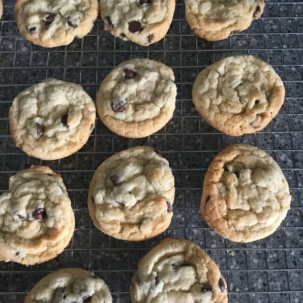

Chocolate Chip Cookies

Description
One of the most popular cookie types.
Ingredients
- 1 cup packed brown sugar
- 1 cup white sugar
- 1 cup shortening
- 1 cup vegetable oil
- 2 eggs
- 2 teaspoons vanilla extract
- 4 cups all-purpose flour
- 4 teaspoons cream of tartar
- 2 teaspoons baking soda
- 1 teaspoon salt
- 2 cups semisweet chocolate chips
Steps
- Preheat oven to 350 degrees F (175 degrees C).
- In a medium bowl, bowl, beat together the white sugar, brown sugar, oil and shortening until smooth. Stir in eggs and vanilla, beating well after each addition. Combine the flour, cream of tartar, baking soda and salt, stir into the sugar mixture. Finally , fold in the chocolate chips. Drop by heaping spoonfuls onto an unprepared cookie sheet.
- Bake for 8 to 10 minutes in the preheated oven. Remove from baking sheet to cool on wire racks.